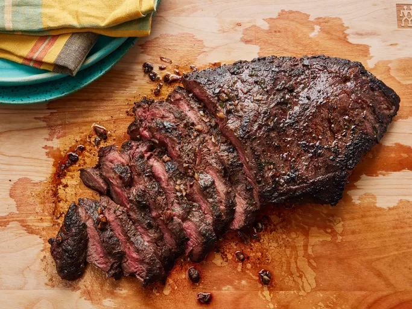

Flat iron steak

Description
This delicious flat iron steak was created from a combination of different recipes that I read. I combined, adjusted, and finally perfected the marinade and cooking time to my taste. I'm sure you will love it as well. After all, it is perfection!
Ingredients
- 1 (2 pound) flat iron steak
- 2 1/2 tablespoons olive oil
- 2 cloves garlic, minced
- 1 teaspoon chopped fresh parsley
- 1/4 teaspoon chopped fresh rosemary
- 1/2 teaspoon chopped fresh chives
- 1/4 cub Cabernet Sauvignon (or other dry red wine)
- 1/2 teaspoon salt
- 3/4 teaspoon ground black pepper
- 1/4 teaspoon dry mustard powder